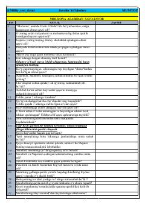

MA"Molxona" asari bo'yicha bilim va testlarni sinovchi savol-javoblar to'plami.
Ushbu qo'llanma Jorj Oruellning mashhur "Molxona" (Ferma) asari asosida tuzilgan savol-javob va testlarni o'z ichiga oladi. Kitobxonlar asar mazmunini chuqur o'zlashtirishi va syujet tafsilotlarini eslab qolishi uchun mo'ljallangan.